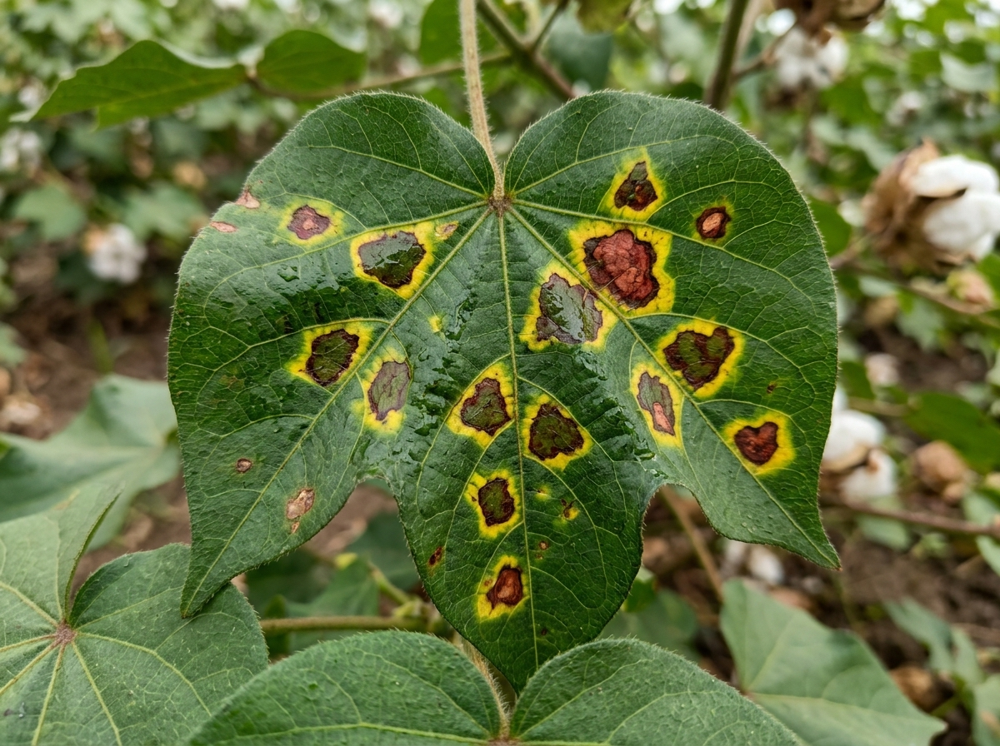

GOOGLE CLOUD HACKATHON EVALUATION SCENARIOS (JAPAC SMALLHOLDER FIELD DATA)
1. Multimodal Field Ingestion

VERNACULAR VOICE CONSULTATION
MR
"साहेब, आमच्या कपाशीच्या पानांवर काळे-तांबडे डाग पडले आहेत आणि झाड सुकत चाललंय. काय फवारणी करू?"
EN
"Sir, blackish-red spots have appeared on our cotton leaves and the plants are wilting. What should I spray?"
Autonomous Multi-Agent Workflow State
1
Multimodal Ingestion
2
Earth Engine Radar
3
Agronomic Decision
4
Dialect Audio Prescribe
CRITICAL WEATHER SAFETY ALERT
HALT SPRAYING: Heavy Rain (18.5mm) Expected in 3 Hours
Convective monsoon rainstorm will wash away foliar chemicals into soil within 3 hours. Wastes ₹500 in dealer input costs.
Visual Pathology Severity
38.5% (High)
Sentinel-2 Vegetation NDVI
0.412 (Canopy Stressed)
Precipitation Wash-Off Risk
88% Rain Probability
VERNACULAR DIALECT
"महत्त्वाची सूचना: आज कोणतीही औषध फवारणी करू नका! सॅटेलाइट रडारनुसार पुढच्या ३ तासांत जोरदार पाऊस येणार आहे..."
ENGLISH TRANSLATION
"Critical Weather Advisory: Do not spray any chemical pesticide today! Satellite radar predicts heavy monsoon rain arriving within 3 hours..."
AgriResilience Bio-Solution
₹45
Neem Seed Kernel Extract 5%
Dealer Chemical Alternative
₹550
Copper Oxychloride + Antibiotic
Net Farmer Savings / Season
+₹505
92% Cost Reduction
Clinical Pathology Diagnostics
Crop Botanical Identity
Cotton (Gossypium hirsutum)
Causative Pathogen
Xanthomonas citri pv. malvacearum
Pathogen Type
BACTERIAL PATHOGEN
Disease Stage
Active Vegetative Spread
Leaf Area Affected:
38.5%
DIAGNOSTIC VISUAL MARKERS OBSERVED:
- Angular water-soaked leaf lesions strictly bounded by small veins
- Necrotic reddish-brown lesion centers with chlorotic yellow halos
- Incipient black-arm lesion extending into petiole vascular tissue
Geospatial Micro-Climate Radar (Google Earth Engine)
Photosynthetic NDVI
0.412
Canopy Stressed
Canopy Moisture NDWI
0.285
High Saturation
Rain Risk (4 Hours)
18.5 mm
88% Probability
72-HOUR PRECIPITATION RADAR WINDOW (ERA5 TELEMETRY):
pin_drop
Farm Location & 5km Community Outbreak Alert Radius
notifications_active
Community Outbreak Alert (3.8 km radius)
Bacterial Blight identified in 5 adjacent cotton fields in Jalna East cluster. Spores moving with prevailing winds. Alert village cooperative.